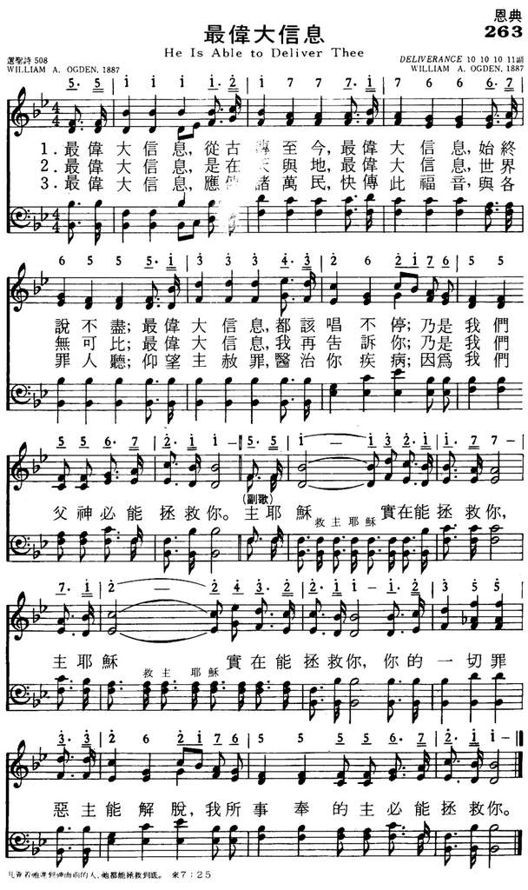

|
|
|
|
1 ‘Tis the grandest theme thru the ages rung |
263最伟大信息
1．最伟大信息 从古传至今
最伟大信息 始终说不尽 最伟大信息 都该唱不停 乃是我们父神必能拯救你 副歌： 主耶稣 实在能拯救你 主耶稣 实在能拯救你 你的一切罪恶 主能解脱 我所事奉的主必能拯救你 2．最伟大信息 是在天与地 最伟大信息 世界无可比 最伟大信息 我再告诉你 乃是我们父神必能拯救你 3．最伟大信息 应传诸万民 快传此福音 与各罪人听 仰望主赦罪 医治你疾病 因为我们父神必能拯救你 |
|
https://www.mred365.cn/szxg/7266.html
 https://hymnary.org/hymn/WASH1957/page/266
|
|
|
|
|

-

https://youtu.be/uJosPwqqPCA -
https://youtu.be/kL08iyjKCIY
LX1593
He Is Able
To Deliver Thee
263最伟大信息
| Text: | He Is Able to Deliver Thee |
| Author: | William A. Ogden, 1841-1897 |
| Tune: | ['Tis the grandest theme through the ages rung] |
| Composer: | William A. Ogden |
| Short Name: | W. A. Ogden |
| Full Name: | Ogden, W. A., (William Augustine), 1841-1897 |
| Birth Year: | 1841 |
| Death Year: | 1897 |
William Augustine Ogden USA 1841-1897. Born at Franklin County, OH, his family moved to IN when he was age six. He studied music in local singing schools at age 8, and by age 10 could read church music fairly well. Later, he could write out a melody by hearing it sung or played. He enlisted in the American Civil War in the 30th IN Volunteer Infantry. During the war he organized a male choir which became well known throughout the Army of the Cumberland. After the war, he returned home, resumed music study, and taught school. He married Jennie V Headington, and they had two children: Lowell and Marian. He worked for the Iowa Normal School, Toledo Public School System. Among his teachers: Lowell Mason, Thomas Hastings, E E Baily and B F Baker, president of the Boston Music School. He wrote many hymns, both lyrics and/or music. He later issued his first song book, “The silver song” (1870). It became quite popular, selling 500,000 copies. He went on to publish other song books. Ogden also taught music at many schools in the U S and Canada. In 1887 he became superintendent of music in the public schools of Toledo, OH. His works include: “New silver songs for Sunday school” (1872), “Crown of life” (1875), “Notes of victory” (1885), “The way of life” (1886), “Gathering jewels” (1886). He was known as a very enthusiastic person in his work and a very congenial one as well. He died at Toledo, OH.
John Perry
Tune Information
| Title: | DELIVERANCE (Ogden) |
| Composer: | W. A. Ogden (1887) |
| Meter: | 10.10.10.10 with refrain |
| Incipit: | 55111 12177 71766 |
| Key: | B♭ Major |
| Copyright: | Public Domain |
“Call upon Me in the day of trouble: I will deliver thee…” (Ps. 50:15)
INTRO.:
A song which talks about God’s ability and willingness to deliver us in the day of trouble is “He Is Able To Deliver Thee” (#279 in Hymns for Worship Revised, and #499 in Sacred Selections for the Church). The text was written and the tune (Deliverance) was composed both by William (some books mistakenly have Walter) Augustine Ogden, who was born near Columbus in Franklin County, OH, on Oct., 10, 1841. When he was six years old, his family moved to Indiana, and he received his education in the local primary and elementary schools. In addition, beginning at age eight, he received his early musical training in community singing schools. By age ten he could read music fairly well. A little later, he could write a melody by hearing it sung or played. When he was eighteen, he became a song director in his home church.
During the Civil War, Ogden served in the 30th Indiana Volunteer Infantry for four years, and he organized a men’s choir which became well known throughout the Army of the Cumberland. Resuming his music education after the war, he studied under several well-known teachers including B. F. Baker who was president of the Boston Music School, E. E. Bailey, Lowell Mason, and Thomas Hastings, and became widely known as a teacher of normal music schools and as a conductor of musical conventions throughout the United States and Canada. As his skills developed, Ogden issued his first song book, The Silver Song, in 1870. It became immensely popular, selling 500,000 copies. In addition, he wrote several hymns and hymn tunes and published a large number of other hymnbooks for Sunday schools.
“He Is Able to Deliver Thee” first appeared in 1887 in Triumphant Songs for Sunday Schools and Gospel Meetings, published in Chicago, IL, by Edwin Othello Excell. Other songs by Ogden include “Jesus, The Loving Shepherd,” “Where He Leads I’ll Follow,” “Blessed Be the Fountain of Life,” “O If My House Is Built upon a Rock,” and “Seeking The Lost;” the words to “Scattering Precious Seed” with music by George C. Hugg; and music for Alexceneh Thomas’s “Bring Them In” and Charles H. Gabriel’s “All Things Are Ready;” in addition to the children’s song “Two Little Hands.” His song “Look and Live” used to be quite popular as well. Also in 1887, Ogden was appointed supervisor of music for the public schools of Toledo, OH, a position which he held for ten years until his death in Toledo on Oct. 14, 1897, just a few days after his 56th birthday.
Among hymnbooks published by members of the Lord’s church for use in churches of Christ, “He Is Able to Deliver Thee” has appeared in the 1921 Great Songs of the Church (No. 1) and the 1937 Great Songs of the Church No. 2 both (chorus only) edited by E. L. Jorgenson; the 1948 Christian Hymns No. 2 and the 1966 Christian Hymns No. 3 both edited by L. O. Sanderson; the 1959 Majestic Hymnal No. 2 and the 1978 Hymns of Praise both edited by Reuel Lemmons; the 1963 Abiding Hymns edited by Robert C. Welch; the 1963 Christian Hymnal (chorus only) edited by J. Nelson Slater; the 1971 Songs of the Church and the 1990 Songs of the Church 21st C. Ed. both edited by Alton H. Howard; the 1978/1983 Church Gospel Songs and Hymns edited by V. E. Howard; the 1992 Praise for the Lord edited by John P. Wiegand; the 2007 Sacred Songs of the Church edited by William D. Jeffcoat; the 2009 Favorite Songs of the Church and the 2010 Songs for Worship and Praise both edited by Robert J. Taylor Jr.; and the 2012 Psalms, Hymns, and Spiritual Songs edited by Steve Wolfgang et. al; in addition to Hymns for Worship and Sacred Selections.
The hymn emphasizes the deliverance that God grants to those who trust in Him.
I. Stanza 1 tells us that God’s deliverance is the grandest theme through all
the ages of the world
’Tis the grandest theme through the ages rung;
’Tis the grandest theme for a mortal tongue;
’Tis the grandest theme that the world e’er sung,
“Our God is able to deliver thee.”
A. It’s a theme which began with God’s first promise: Gen. 3:16
B. It’s a theme that the mortal tongues of the Old Testament prophets declared:
Joel 2:32
C. It’s the theme which Shadrach, Meshach, and Abednego “sung” at the fiery
furnace: Dan. 3:16-17
II. Stanza 2 tells us that God’s deliverance is the grandest theme in either
earth or main
’Tis the grandest theme in the earth or main;
’Tis the grandest theme for a mortal strain;
’Tis the grandest theme, tell the world again,
“Our God is able to deliver thee.”
A. The “main” is the sea—it’s the grandest theme through the whole world, both
land and sea, which is why Jesus commanded: Mk. 16:15
B. It’s the grandest theme for a mortal strain, as King Darius asked about it
when Daniel was thrown into the lion’s den: Dan. 6:18-20
C. It’s a theme which needs to be told to the world again and again: Isa. 61:1-2
III. Stanza 3 tells us that God’s deliverance is the grandest theme for the
guilty, sinful soul
’Tis the grandest theme, let the tidings roll,
To the guilty heart, to the sinful soul;
Look to God in faith, He will make thee whole,
“Our God is able to deliver thee.”
A. It is a theme for which God wants the tidings to roll just as they did in the
first century: Acts 8:4
B. It’s a theme for the guilty heart and sinful soul, which includes every
responsible human being: Rom. 3:23
C. It’s a theme which reminds us that through Christ God will deliver us from
darkness into light: Col. 1:12-13
CONCL.:
The chorus repeats the theme of the song:
He is able to deliver thee,
He is able to deliver thee;
Though by sin oppressed, go to Him for rest;
“Our God is able to deliver thee.”
Since all have sinned, the grandest message that each of us can hear and that we
in turn can bring to a lost and dying world is “He Is Able to Deliver Thee.”
https://hymnstudiesblog.wordpress.com/2013/03/17/he-is-able-to-deliver-thee/
He Is Able to Deliver Thee
Words: William Augustine Ogden (b. Oct. 10, 1841; d. Oct. 14, 1897)
Music: William Augustine Ogden
Links:
Wordwise Hymns (none)
The Cyber Hymnal
Note: William Ogden was a productive gospel song writer in the latter part of
the nineteenth century. Sometimes he wrote the lyrics as well as the tune, as
with this 1887 song. (Seeking the Lost, and I’ve a Message from the Lord, are
examples too.) Other times, such as with Bring Them In, and The Bright
Forevermore, he provided only the tune.
In 1937, in a Broadway musical called Babes in Arms, there was a show-stopping
number called “Johnny One Note.” (“Johnny could only sing one note / And the
note he sings was this.”) It told about “poor Johnny” who could only manage to
sing a single note. But he bravely stepped forward and sang that one note with
gusto, and became famous for it!
I thought of that as I considered this song. Not in connection with the tune,
but about the words. Twenty-four lines (including the refrains), all proclaiming
a single theme, that God is able to deliver us. But what a wonderful theme that
is! It runs, like a scarlet thread, through the Bible from beginning to end.
CH-1) ’Tis the grandest theme through the ages rung;
’Tis the grandest theme for a mortal tongue;
’Tis the grandest theme that the world e’er sung,
“Our God is able to deliver thee.”
He is able to deliver thee,
He is able to deliver thee;
Though by sin oppressed, go to Him for rest;
“Our God is able to deliver thee.”
Various Hebrew and Greek words are translated “deliver” in our English Bibles.
The basic and most common meaning is to rescue. It may be a rescue within the
bounds of time, or a rescue that is eternal. It may be a rescue from present
circumstances, or from the ruinous bondage of sin. But in all of these, the
power of God to bring deliverance is brought before us.
One particular incident is actually recounted three separate times (in Second
Kings, Second Chronicles, and Isaiah). It concerns the attempt of the Assyrian
army to besiege and take the city of Jerusalem, during the reign of godly King
Hezekiah. A spokesman for the Assyrians, standing outside the wall, ridiculed
the king and mocked his God, saying that even God couldn’t protect the citizens
of Jerusalem (II Kgs. 18:29-30). But Hezekiah went to prayer, and the Lord
miraculously delivered His people from harm (II Kgs. 19:35-37).
Later, Daniel was taken as a slave to Babylon, and served in the royal court
under a series of rulers. In the days of Darius the Persian, Daniel’s enemies
plotted to get rid of him and he was subsequently cast into a pit containing of
ravenous lions. The king mourned the loss of his faithful counselor, yet he had
a little hope. “Your God, whom you serve continually, He will deliver you” (Dan.
6:16). Early the next morning, the king hastened to the pit and called out, “Has
your God….been able to deliver you?” (vs. 20), and Daniel assured him that He
had.
In an earlier incident, three Hebrew slaves were threatened with being thrown
into a blazing furnace if they refused to bow before a golden idol. Their
response was, “Our God whom we serve is able to deliver us” (Dan. 3:17).
But there’s a significant twist in this case. In the following verse the three
say, “But if not…” Even if the Lord chose not to deliver them, they still would
not bow before the image. Some have thought this showed a lack of faith on their
part. But that’s not so. They were simply recognizing that they didn’t know the
will of God in this situation. In every age there have been martyrs for the
faith. Certainly the Lord was able, but was He going to rescue them now. (Yes,
He was, vs. 23-27).
There’s a significant use of our word in Matthew when the Lord Jesus hung upon
the cross. The Jewish leaders stood by, mocking Him. For them, the proof that He
was who He claimed to be would be a show of miraculous power. “If He is the King
of Israel, let Him now come down from the cross….He trusted in God; let Him
deliver Him now” (Matt. 27:42-43).
Their total misunderstanding of the case is expressed in the words, “He saved
others [perhaps referring to Christ’s miracles]; Himself He cannot save” (vs.
42). But the whole theme of the gospel of grace is that if Christ were to save
others eternally He had to be willing to remain where He was. It was by His
sacrifice that our debt of sin has been paid (I Cor. 15:3). He “gave Himself for
our sins, that He might deliver us” (Gal. 1:4). It’s the “grandest theme for a
mortal tongue.”
“He [God] has delivered us from the power of darkness and conveyed us into the
kingdom of the Son of His love” (Col. 1:13). “[Now we] wait for His Son from
heaven, whom He raised from the dead, even Jesus who delivers us from the wrath
to come” (I Thess. 1:10).
Questions:
1) What other themes in Scripture bear repeating over and over?
2) What is it about the gospel that makes it the greatest theme of all?
Links:
Wordwise Hymns (none)
The Cyber Hymnal
https://wordwisehymns.com/2013/02/15/he-is-able-to-deliver-thee/